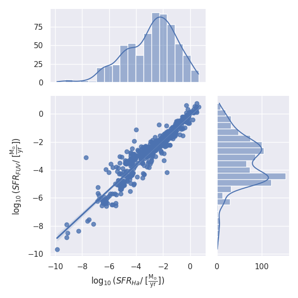

The Star Formation History (SFH) of a galaxy can offer many insights not only for the evolution and the future of the galaxy, but also for the evolution of the Universe. This is why there are various theoretical models trying to describe the SFH of galaxies. One of those models is the Delayed-Tau model, which approximates the Star Formation Rates (SFR) of galaxies as a function with a rising SFR at the beginning, until it reaches a peak at a time \(\tau\), unique for each galaxy, and then it drops at an exponential rate.
@haslbauerCosmologicalStarFormation2023 argue that the Delayed-\(\tau\) model is opposed to the Lilly-Madau plot ([@madauCosmicStarFormation2014]), which plots the observed SFR’s of galaxies with the corresponding redshifts (\(z\)) and calculates a cosmic SFR peak at \(z\approx 2\). The way they calculated this inconsistency is by using observatory data for SFR and Stellar Masses 1 from the UNGC catalog (@karachentsevUPDATEDNEARBYGALAXY2013, @karachentsevSTARFORMATIONPROPERTIES2013) for calculating the parameters (the timescale \(\tau\) and the normalization constant \(A_{del}\)) of the model. This calculation for the galaxies of the Local Cosmological Volume (LCV), allows the investigation of the SFR throughout the life each galaxy and so we can find the expected time of peak of the SFR.
In this thesis project, we will try to calculate the same parameters, by using a bigger sample size and the method Markov Chain Monte Carlo, to examine if the inconsistencies of the model derive from the results of the previous analysis, or if it is an intrinsic problem of the model
Keywords: Galaxies, Galaxy Evolution, Star Formation History (SFH), Star Formation Rate (SFR), Delayed-\(\tau\), Local Cosmological Volume, Lilly-Madau Plot, Redshift, Markov Chain Monte Carlo (MCMC).
Galaxy Morphology and Star-Forming Regions
This thesis will focus on how a specific parametric model tries to explain the Star-Formation Histories of galaxies, but to do that, we first need to understand what a galaxy is, what it is made of, the mechanisms of its evolution, and how we can distinguish them.
The study of galaxies is a very active field of astronomy since it is a relatively young discipline. Until 1920, astronomers who observed spiral nebulae were not certain what they were. In 1921, two papers were published: one argued that the Milky Way constituted the whole Universe and that the spiral nebulae were part of it, while the second argued that each spiral nebula was, in fact, a distinct “island universe” [@shapleyScaleUniverse1921]. This debate became known as the Great Debate2.
In 1925, Edwin Hubble put an end to the debate by showing that the distances to the spiral nebulae were far too great compared to other objects within the Milky Way. The method he used involved observing Cepheid variable stars in these nebulae. By applying the period-luminosity relationship, which had been discovered by Henrietta Swan Leavitt [@leavitt1777VariablesMagellanic1907], Hubble was able to determine their distances. This groundbreaking discovery confirmed that spiral nebulae were indeed separate galaxies, marking the beginning of extragalactic astronomy and revolutionizing our understanding of the Universe.
Today we know that galaxies are large-scale structures containing, Stars, gas and dust, Stellar and planetary systems and Stellar remnants (white dwarves, neutron stars and black holes). Those structures are held together by their gravity, having Stellar Masses more than \(\sim 10^5\ M_\odot\), and an average diameter of \(\sim 4\ \text{kpc}\). They are extremely diverse systems, and each galaxy differs in mass, size, brightness, stellar populations and morphology. This is exactly why we have created systems to classify them.
Galaxy Classification
The most common method of classification is the Hubble-de Vacouleur classification, which categorizes galaxies based on their morphology.
Elliptical Galaxies (E): Ellipsoidal shapes with smooth brightness profiles, containing older stars and minimal interstellar matter. Their eccentricity takes values from 0 to 0.7, so we can categorize them even further, form E0 to E7
Lenticular Galaxies (S0): Intermediate between elliptical and spiral galaxies,
Spiral Galaxies: Characterized by a central bulge and spiral arms. Depending on the arm tightness we can categorize them as a,b,c,d from tight to looser, and depending if they have a bar or not they are subdivided into:
Unbarred Spirals (S): No central bar; classified as Sa, Sb, Sc, etc., based on arm tightness and bulge size.
Barred Spirals (SB): Feature a central bar; denoted as SBa, SBb, SBc, etc.
Irregular Galaxies (Irr): Lack regular structure, often rich in gas and dust with high star formation rates.
Intermediate galaxies between ellipticals and spirals are called Lenticular galaxies (S0-SB0), featuring a central bulge and disk but lacking significant spiral structure.
Tuning-fork-style diagram of the Hubble sequenceBy Cosmogoblin - Own work, CC0, https://commons.wikimedia.org/w/index.php?curid=121743256
This table was based on the files of [@RC3ThirdReference]
Hubble
E
E-S0
S0
S0/a
Sa
Sa-b
Sb
Sb-c
Sc
Sc-Irr
Irr
T
-5
[-4,-3]
[-2,-1]
0
1
2
3
4
[5,6,7]
8
[9,10,11]
Dwarf Galaxies
Star-Forming Regions
Star Formation History (SFH)
The SFH of a galaxy describes the evolution of its star formation rate over time. By selecting an appropriate model for SFH, we can analyze stellar production, predict periods of active or quiescent star formation, and determine when SFR stabilizes.
Understanding SFH models is crucial for interpreting internal and external processes affecting galaxies and identifying conditions for intense star formation in their early stages.
Star Formation Rate
The star formation rate (SFR) is defined as the total gas mass of a galaxy converted into stars over a specific time interval. It is typically expressed in solar masses per year (\(M_\odot \cdot \text{yr}^{-1}\)).
The SFR varies significantly over time, and its integration over time provides the total stellar mass formed during the galaxy’s history of star formation. Specifically:
\[
\int_0^{t_{sf}} \text{SFR}(t)dt = \zeta M_*(t_{sf}),\ t_{sf}=\text{Time of Star Formation,}
\tag{1}\]
where \(\zeta\) accounts for mass loss during the Star Formation and is approximately \(\zeta \approx 1.3\) (@kroupaConstraintsStarFormation2020).
Estimating SFR from Spectra
SFR can be estimated using various photometric or spectroscopic methods based on the luminosity of at least one spectral band or the intensity of a spectral line. Different luminosities and intensities trace distinct emission mechanisms, offering insights into a galaxy’s radiation sources. Below are common methods:3
Hα\(\alpha\)Emission: Young, hot, massive stars (O-type stars, ~10 Myr, ~20 \(M_\odot\)) produce a number of ionizing photons, which they ionize the surrounding hydrogen rich gas. The hydorgen undergoes recombination cascades which produce Balmer emission lines of \(H\alpha\) (0.6563 \(\mu m\)) and \(H\beta\) (0.4861 \(\mu m\)). Dust can significantly affect observations.
Far-Ultraviolet (FUV) Flux: Mainly emitted by young, hot stars ( B-type stars, ~100 Myr). Dust presence can also significantly affect observations.
Infrared (IR) Flux: The stars in a galaxy can heat up the dust in different ways, which then emits radiation in different parts of the IR spectrum. For example, young and massive, short-lived stars, emit UV radiation which then the heated dust emits in a wavelength of \(\approx 60 \mu m\), whereas dust heated by UV-faint old or low-mass stars will emit at \(\approx 100-150\mu m\). As a result, the total IR emission is age-agnostic and provides a more accurate approximation of the SFR because it accounts for contributions from both young and old stellar populations.
Radio Continuum Emission: Strongly correlated with IR. Its origin is complex, involving synchrotron radiation from relativistic electrons and thermal Bremsstrahlung from hot gas.
X-Ray Emission: In star-forming galaxies, X-rays arise from high-mass binary systems (neutron star or black hole with massive stellar companion) and hot gas from supernovae, correlating with SFR up to redshift \(z \sim 4\). X-rays are dust-insensitive, enabling accurate high-redshift observations.
SFR for different luminosities \(L_i\) can be calculated as:
where \(\mathcal{K}_i\) is a constant specific to each \(L_i\) (\(i =\) H\(\alpha\), IR, radio, FUV, X). In our analysis, we lack radio and X-ray data.
Since the luminosities \(L_{\text{FUV}}\) and \(L_{\text{H}\alpha}\) originate from young stars and are highly sensitive to dust, we either directly observe stars unaffected by dust or use correction models to account for dust absorption. It is crucial to ensure that these models neither underestimate nor overestimate the luminosities by overlooking or double-counting the same sources.
Additionally, because these luminosities are emitted by similar stellar populations, we can reasonably expect the \(SFR_{\text{FUV}}\) and \(SFR_{\text{H}\alpha}\) to be approximately equal. As shown in the data from [@karachentsevSTARFORMATIONPROPERTIES2013] and supported by [@kroupaConstraintsStarFormation2020], a suitable approach for estimating the total SFR from FUV and H\(\alpha\) observations is to calculate their average:
where \(L_{\text{FUV}}\) and \(L_{\text{H}\alpha}\) are corrected for dust attenuation.

Plot showing the linear relation \(\log_{10}\text{SFR}_{FUV} = \log_{10}\text{SFR}_{H\alpha}\), as well as their distrubutions
According to [@madauCosmicStarFormation2014], this method often underestimates the SFR, since different galaxy populations may systematically follow distinct absorption mechanisms depending on their characteristics.
Since \(SFR_{\text{FUV}}\), based on the uncorrected \(L_{FUV}\), represents the emission from unobstructed stellar populations, and \(SFR_{TIR}\) isaccounts for dust-reprocessed light, a more accurate way to calculate the total SFR of a galaxy is:
where \(L_{\text{FUV}}\) and \(L_{\text{H}\alpha}\) are not corrected for dust absorption. However, since we do not have enough galaxies with both traces, we will use a different method of calculating the total SFR, which we will discuss later.
Main Sequence Galaxies
The SFR and stellar mass of a galaxy are tightly correlated by the relationship:
\[
\log(\text{SFR}) = \alpha \log(M_*)+\beta
\]
where \(\alpha(t)\) and \(\beta(t)\) depend on time and redshift \(z\) (@speagleHighlyConsistentFramework2014):
Star Formation History Models
library(ggplot2)library(dplyr)
Attaching package: 'dplyr'
The following objects are masked from 'package:stats':
filter, lag
The following objects are masked from 'package:base':
intersect, setdiff, setequal, union
library(latex2exp)# Define time values (positive times)t <-seq(0.01, 12, length.out =200)# Define SFR modelsexponential_decline <-function(t, tau) exp(-t / tau)delayed_exponential <-function(t, tau) t *exp(-t / tau)log_normal <-function(t, tau, T0) (1/ tau) *exp(-((log(t) -log(T0))^2) / (2* tau^2))double_power_law <-function(t, tau, alpha, beta) 1/ ((t / tau)^alpha + (t / tau)^(-beta))# Generate data for each modeldata <-data.frame(t =rep(t, 4),SFR =c(exponential_decline(t, tau =2),delayed_exponential(t, tau =2),log_normal(t, tau =2, T0 =10),double_power_law(t, tau =2, alpha =2, beta =5) ),Model =rep(c("\nExponential Decline\n(τ=2 Gyr)", "\nDelayed Exponential\n(τ=2 Gyr)", "\nLog-Normal\n(τ = 2 Gyr, To = 10 Gyr)", "\nDouble Power Law\n(τ = 2 Gyr, α = 2, β = 5)"), each =length(t)))# Plot all modelsggplot(data, aes(x = t, y = SFR, color = Model)) +geom_line(size =1) +labs(title ="Star Formation Rate Models",x =TeX("Star Formation time ( $t_{sf}$ ) [Gyr]"),y =TeX("SFR($t_{sf}$) [ M$_*$/yr ]" ),color ="Model" ) +scale_x_continuous(limits =c(0, 12)) +theme_minimal() +theme(plot.title =element_text(hjust =0.5))
Warning: Using `size` aesthetic for lines was deprecated in ggplot2 3.4.0.
ℹ Please use `linewidth` instead.
Star Formation Rate over the time of star formation, for different parametric models
Parameterized SFH models are commonly used, offering simplicity through a few parameters [@carnallHowMeasureGalaxy2019a]:
Exponential Decline (Tau Model): The star formation rate (SFR) decreases exponentially over time, following the equation:
where \(\tau\) is the timescale, \(t_{\text{sf}} = t - T_0\) is the star formation time, \(t\) is the age of the Universe, and \(T_0\) is the time when star formation began.
Delayed Exponential (Delayed Tau Model): This model provides a more complex representation where the SFR initially increases, reaches a peak, and then declines exponentially over time. The equation for this model is:
This accounts for an initial growth phase followed by a decline. In this case, \(\tau\) represents the time it takes for the galaxy to reach \(\text{SFR}_{\text{max}}\).
Log-Normal Distribution Model: The SFR follows a normalized log-normal distribution, which can accurately model the star formation rate density (\(\text{SFRD} = \text{SFR}/M_*\)) in individual galaxies. The general form of the equation is:
where \(\tau\) and \(T_0\) are free parameters of the distribution that lack physical significance, as the SFR does not necessarily peak at \(t = e^{T_0}\).
Double Power Law: This model describes a scenario where the SFR rises and then falls sharply, useful for modeling galaxies experiencing rapid changes in star formation. The equation is:
where \(\tau\) is the timescale and \(\alpha\), \(\beta\) are exponents that govern the rise and fall of the SFR.
Additionally, there are non-parametric models, which do not follow a specific functional form to describe the star formation of a galaxy. These models are more flexible in adapting to galaxies with more complex star formation patterns.
Delayed-\(τ\) Model
The delayed \(τ\) model is widely used for describing an initial starburst followed by a gradual decline in SFR. This places galaxies on the main sequence. It is particularly effective for massive galaxies (@haslbauerCosmologicalStarFormation2023). However, it assumes smooth SFR evolution and may overestimate peak SFR in high-redshift galaxies.
Using the delayed τ model, we compute \(\tau\), \(t_{\text{sf}}\), and normalization constant \(A_{\text{del}}\) with:
The Lilly-Madau plot is one of the most important plots in the field of galaxy evolution. It describes how the SFRD of the universe evolved over time, with observational data. But to understand it, we first need to understand how the observed age of the Universe and the redshifts of galaxies are related.
Redshift and lookback time
According to Hubble–Lemaître law, all the galaxies are moving away from each other, at a speed proportional to their distance, due to the expansion of the universe.
\(V = H_0\times d\), where \(H_0 \approx 69.8 \text{ km/s/Mpc}\) is the Hubble constant and \(d\) is the distance between the two galaxies.4
Since we have galaxies with relative motions emitting light waves, we can observe the Doppler effect. Specifically, since the galaxies are moving away from each other, and thus from us also, we observe radiation with longer wavelenghts.
Redshift (\(z\)) is the doppler shift resulting from radial motion:
\[
z = \frac{\lambda_{observed}}{\lambda_{emitted}}-1
\]
In special relativity, \(z\) is related to radial velocity \(v\) by [@hoggDistanceMeasuresCosmology2000]
\[
1+z = \sqrt{\frac{1+v/c}{1-v/c}}
\tag{6}\] For small \(v/c\) we can rewrite Equation 6, as:
\[
z \approx \frac{V}{c} = \frac{H_0\times d}{c}
\]
But, because light takes time to cover the distance \(d\) between two galaxies, when the light finally reaches as, we will see the observed galaxy, as it was when the light was emitted, and not how it is at this moment. If we substitute time that it took the light to reach us over the distance, then we arrive at the relation [@longairGalaxyFormation1998]:
\[
t_\text{emitted} \propto z^{-3/2}
\]
The lookback time is the difference between the current age of the Universe and the age of the Universe when the light was emitted
\[
t_L = T_0-t_\text{emitted}
\]
Lilly-Madau Plot
Delayed-\(\tau\) model
Computational Methods
Newton-Raphson
Markov Chain Monte Carlo
Prepering the Catalogs
UNGC HECATE join etc…
Catalog Completeness
Comparing the Catalogs
The “special” case of the Star Formation Rates
Calculating the parameters
According to pre-existing bibliography
Problems with the method
MCMC
Footnotes
They calculated the Stellar Masses by using a Mass to Light ratio of 0.6↩︎
We also have non-Hubble motions \(V = H_0\times d + V_0\), where \(V_0\) is the peculiar velocity and it could, for example, be due to galaxy cluster dynamics. For the current explanation we are going to ignore it. This way the radial velocity \(v\) is equal to \(V\)↩︎